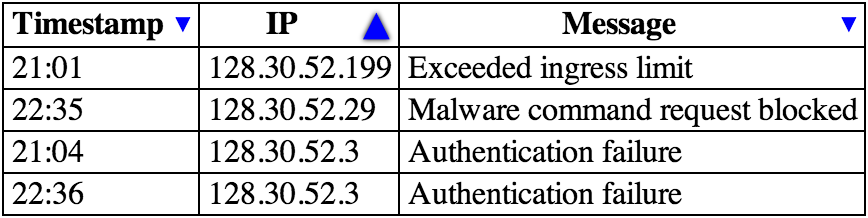

4.9. Tabular data
4.9.1. The table#elementdef-tableReferenced in:1.10.2. Syntax errors3.2.4.2.2. Flow content3.2.4.2.8. Palpable content4.4.1. The p element4.9.1. The table element (2) (3) (4) (5) (6) (7) (8) (9) (10) (11) (12) (13) (14) (15) (16) (17) (18) (19) (20) (21) (22) (23) (24) (25) (26) (27) (28)4.9.2. The caption element (2) (3) (4)4.9.3. The colgroup element (2)4.9.4. The col element4.9.5. The tbody element (2) (3) (4)4.9.6. The thead element (2) (3) (4)4.9.7. The tfoot element (2) (3) (4)4.9.8. The tr element (2) (3) (4) (5) (6) (7)4.9.12. Processing model4.9.12.1. Forming a table (2) (3) (4) (5) (6) (7) (8) (9) (10)4.9.13. Table sorting model (2) (3) (4) (5) (6) (7) (8) (9) (10) (11) (12) (13) (14) (15) (16) (17) (18) (19) (20) (21) (22) (23) (24)4.9.14. Examples4.12.3. The template element8.1.2.4. Optional tags8.1.2.5. Restrictions on content models (2)8.2.3.1. The insertion mode8.2.3.2. The stack of open elements (2) (3)8.2.5.1. Creating and inserting nodes (2) (3)8.2.5.4.9. The "in table" insertion mode (2) (3) (4)8.2.8.3. Unexpected markup in tables (2) (3) (4) (5) (6) (7) (8) (9) (10) (11) (12) (13) (14)10.3.9. Tables (2) (3) (4) (5) (6) (7) (8) (9) (10) (11) (12) (13)11.2. Non-conforming features (2) (3) (4) (5) (6) (7) (8) (9) (10) (11) (12) (13) (14) (15) (16)11.3.4. Other elements, attributes and APIs (2) (3) (4)Elements (2) (3) (4) (5) (6) (7)Element content categories (2)Attributes (2) (3)Element InterfacesEvents (2) element
- Categories:
- Flow content.
- Palpable content.
- Contexts in which this element can be used:
- Where flow content is expected.
- Content model:
- In this order: optionally a
captionelement, followed by zero or morecolgroupelements, followed optionally by atheadelement, followed by either zero or moretbodyelements or one or moretrelements, followed optionally by atfootelement, optionally intermixed with one or more script-supporting elements. - Tag omission in text/html:
- Neither tag is omissible
- Content attributes:
- Global attributes
bordersortable- Enables a sorting interface for the table - Allowed ARIA role attribute values:
- Any role value.
- Allowed ARIA state and property attributes:
- Global aria-* attributes
- Any
aria-*attributes applicable to the allowed roles. - Any
- DOM interface:
-
interface HTMLTableElement#htmltableelement-htmltableelementReferenced in:11.3.4. Other elements, attributes and APIsElementsElement Interfaces : HTMLElement { attribute HTMLTableCaptionElement? caption; HTMLTableCaptionElement createCaption(); void deleteCaption(); attribute HTMLTableSectionElement? tHead; HTMLTableSectionElement createTHead(); void deleteTHead(); attribute HTMLTableSectionElement? tFoot; HTMLTableSectionElement createTFoot(); void deleteTFoot(); [SameObject] readonly attribute HTMLCollection tBodies; HTMLTableSectionElement createTBody(); [SameObject] readonly attribute HTMLCollection rows; HTMLTableRowElement insertRow(optional long index = -1); void deleteRow(long index); attribute boolean sortable; void stopSorting(); };
The table element represents data with more than one dimension, in
the form of a table.
The table element takes part in the table
model. Tables have rows, columns, and cells given by their descendants. The rows and
columns form a grid; a table’s cells must completely cover that grid without overlap.
Precise rules for determining whether this conformance requirement is met are described in the description of the table model.
Authors are encouraged to provide information describing how to interpret complex tables. Guidance on how to provide such information is given below.
Tables should not be used as layout aids.
Historically, many Web authors have tables in HTML as a way to control their page layout making it difficult to extract tabular data from such documents.
In particular, users of accessibility tools, like screen readers, are likely to find it very difficult to navigate pages with tables used for layout.
If a table is to be used for layout it must be marked with the
attribute role="presentation" for a
user agent to properly represent the table to an assistive technology and to properly convey the
intent of the author to tools that wish to extract tabular data from
the document.
There are a variety of alternatives to using HTML tables for layout, primarily using CSS positioning and the CSS table model. [CSS-2015]
The border content attribute may be specified on a table element to
explicitly indicate that the table element is not being
used for layout purposes. If specified, the attribute’s value must
either be the empty string or the value "1".
The attribute is used by certain user agents as an indication that
borders should be drawn around cells of the table.
Tables can be complicated to understand and navigate. To help users with this, user agents should clearly delineate cells in a table from each other, unless the user agent has classified the table as a layout table.
Authors and implementors are encouraged to consider using some of the table design techniques described below to make tables easier to navigate for users.
User agents, especially those that do table analysis on arbitrary content, are encouraged to find heuristics to determine which tables actually contain data and which are merely being used for layout. This specification does not define a precise heuristic, but the following are suggested as possible indicators:
| Feature | Indication |
|---|---|
The use of the role attribute with the value presentation
| Probably a layout table |
The use of the non-conforming border attribute with the non-conforming value 0
| Probably a layout table |
The use of the non-conforming cellspacing and cellpadding attributes with the value 0
| Probably a layout table |
The use of caption, thead, or th elements
| Probably a non-layout table |
The use of the headers and scope attributes
| Probably a non-layout table |
The use of the non-conforming border attribute with a value other than 0
| Probably a non-layout table |
| Explicit visible borders set using CSS | Probably a non-layout table |
The use of the summary attribute
| Not a good indicator (both layout and non-layout tables have historically been given this attribute) |
It is quite possible that the above suggestions are wrong. Implementors are urged to provide feedback elaborating on their experiences with trying to create a layout table detection heuristic.
If a table element has a (non-conforming) summary attribute, and the user agent has not classified the
table as a layout table, the user agent may report the contents of that attribute to the user.
The sortable attribute is used in the table sorting model.
- table .
caption[ = value ] -
Returns the table’s
captionelement.Can be set, to replace the
captionelement. - caption = table .
createCaption() -
Ensures the table has a
captionelement, and returns it. - table .
deleteCaption() -
Ensures the table does not have a
captionelement. - table .
tHead[ = value ] -
Returns the table’s
theadelement.Can be set, to replace the
theadelement. If the new value is not atheadelement, throws aHierarchyRequestErrorexception. - thead = table .
createTHead() -
Ensures the table has a
theadelement, and returns it. - table .
deleteTHead() -
Ensures the table does not have a
theadelement. - table .
tFoot[ = value ] -
Returns the table’s
tfootelement.Can be set, to replace the
tfootelement. If the new value is not atfootelement, throws aHierarchyRequestErrorexception. - tfoot = table .
createTFoot() -
Ensures the table has a
tfootelement, and returns it. - table .
deleteTFoot() -
Ensures the table does not have a
tfootelement. - table .
tBodies -
Returns an
HTMLCollectionof thetbodyelements of the table. - tbody = table .
createTBody() -
Creates a
tbodyelement, inserts it into the table, and returns it. - table .
rows -
Returns an
HTMLCollectionof thetrelements of the table. - tr = table .
insertRow( [ index ] ) -
Creates a
trelement, along with atbodyif required, inserts them into the table at the position given by the argument, and returns thetr.The position is relative to the rows in the table. The index -1, which is the default if the argument is omitted, is equivalent to inserting at the end of the table.
If the given position is less than -1 or greater than the number of rows, throws an
IndexSizeErrorexception. - table .
deleteRow(index) -
Removes the
trelement with the given position in the table.The position is relative to the rows in the table. The index -1 is equivalent to deleting the last row of the table.
If the given position is less than -1 or greater than the index of the last row, or if there are no rows, throws an
IndexSizeErrorexception.
The caption#dom-htmltableelement-captionReferenced in:4.9.1. The table element IDL attribute must return, on
getting, the first caption element child of the table element, if any,
or null otherwise. On setting, the first caption element child of the table element, if any, must be removed, and the new value, if not null, must be
inserted as the first node of the table element.
The createCaption()#dom-htmltableelement-createcaptionReferenced in:4.9.1. The table element method must return
the first caption element child of the table element, if any; otherwise
a new caption element must be created, inserted as the first node of the table element, and then returned.
The deleteCaption()#dom-htmltableelement-deletecaptionReferenced in:4.9.1. The table element method must remove
the first caption element child of the table element, if any.
The tHead#dom-htmltableelement-theadReferenced in:4.9.1. The table element IDL attribute must return, on
getting, the first thead element child of the table element, if any, or
null otherwise. On setting, if the new value is null or a thead element, the first thead element child of the table element, if any, must be removed, and
the new value, if not null, must be inserted immediately before the first element in the table element that is neither a caption element nor a colgroup element, if any, or at the end of the table if there are no such elements.
If the new value is neither null nor a thead element, then a HierarchyRequestError DOM exception must be thrown instead.
The createTHead()#dom-htmltableelement-createtheadReferenced in:4.9.1. The table element method must return the
first thead element child of the table element, if any; otherwise a new thead element must be created and inserted immediately before the first element in
the table element that is neither a caption element nor a colgroup element, if any, or at the end of the table if there are no such elements,
and then that new element must be returned.
The deleteTHead()#dom-htmltableelement-deletetheadReferenced in:4.9.1. The table element method must remove the
first thead element child of the table element, if any.
The tFoot#dom-htmltableelement-tfootReferenced in:4.9.1. The table element IDL attribute must return, on
getting, the first tfoot element child of the table element, if any, or
null otherwise. On setting, if the new value is null or a tfoot element, the first tfoot element child of the table element, if any, must be removed, and
the new value, if not null, must be inserted at the end of the table. If the new value is neither
null nor a tfoot element, then a HierarchyRequestError DOM exception
must be thrown instead.
The createTFoot()#dom-htmltableelement-createtfootReferenced in:4.9.1. The table element method must return the
first tfoot element child of the table element, if any; otherwise a new tfoot element must be created and inserted at the end of the table, and then that new
element must be returned.
The deleteTFoot()#dom-htmltableelement-deletetfootReferenced in:4.9.1. The table element method must remove the
first tfoot element child of the table element, if any.
The tBodies#dom-htmltableelement-tbodiesReferenced in:4.9.1. The table element attribute must return an HTMLCollection rooted at the table node, whose filter matches only tbody elements that are children of the table element.
The createTBody()#dom-htmltableelement-createtbodyReferenced in:4.9.1. The table element method must create a
new tbody element, insert it immediately after the last tbody element
child in the table element, if any, or at the end of the table element
if the table element has no tbody element children, and then must return
the new tbody element.
The rows#dom-htmltableelement-rowsReferenced in:4.9.1. The table element attribute must return an HTMLCollection rooted at the table node, whose filter matches only tr elements that are either children of the table element, or children
of thead, tbody, or tfoot elements that are themselves
children of the table element. The elements in the collection must be ordered such
that those elements whose parent is a thead are included first, in tree order,
followed by those elements whose parent is either a table or tbody element, again in tree order, followed finally by those elements whose parent is a tfoot element, still in tree order.
The behavior of the insertRow(index)#dom-htmltableelement-insertrowReferenced in:4.9.1. The table element method depends on the state of the table. When it is called,
the method must act as required by the first item in the following list of conditions that
describes the state of the table and the index argument:
- If index is less than -1 or greater than the number of elements
in
rowscollection: - The method must throw an
IndexSizeErrorexception. - If the
rowscollection has zero elements in it, and thetablehas notbodyelements in it: - The method must create a
tbodyelement, then create atrelement, then append thetrelement to thetbodyelement, then append thetbodyelement to thetableelement, and finally return thetrelement. - If the
rowscollection has zero elements in it: - The method must create a
trelement, append it to the lasttbodyelement in the table, and return thetrelement. - If index is -1 or equal to the number of items in
rowscollection: - The method must create a
trelement, and append it to the parent of the lasttrelement in therowscollection. Then, the newly createdtrelement must be returned. - Otherwise:
- The method must create a
trelement, insert it immediately before the indexthtrelement in therowscollection, in the same parent, and finally must return the newly createdtrelement.
When the deleteRow(index)#dom-htmltableelement-deleterowReferenced in:4.9.1. The table element method is called, the user agent must run the following
steps:
- If index is equal to -1, then index must be
set to the number of items in the
rowscollection, minus one. - Now, if index is less than zero, or greater than or equal to the
number of elements in the
rowscollection, the method must instead throw anIndexSizeErrorexception, and these steps must be aborted. - Otherwise, the method must remove the indexth element in the
rowscollection from its parent.
The stopSorting() method is used in the table sorting model.
The IDL attribute sortable#dom-htmltableelement-sortableReferenced in:4.9.1. The table element must reflect the sortable content attribute.
<section> <style scoped> table { border-collapse: collapse; border: solid thick; } colgroup, tbody { border: solid medium; } td { border: solid thin; height: 1.4em; width: 1.4em; text-align: center; padding: 0; } </style> <h1>Today’s Sudoku</h1> <table> <colgroup><col><col><col> <colgroup><col><col><col> <colgroup><col><col><col> <tbody> <tr> <td> 1 <td> <td> 3 <td> 6 <td> <td> 4 <td> 7 <td> <td> 9 <tr> <td> <td> 2 <td> <td> <td> 9 <td> <td> <td> 1 <td> <tr> <td> 7 <td> <td> <td> <td> <td> <td> <td> <td> 6 <tbody> <tr> <td> 2 <td> <td> 4 <td> <td> 3 <td> <td> 9 <td> <td> 8 <tr> <td> <td> <td> <td> <td> <td> <td> <td> <td> <tr> <td> 5 <td> <td> <td> 9 <td> <td> 7 <td> <td> <td> 1 <tbody> <tr> <td> 6 <td> <td> <td> <td> 5 <td> <td> <td> <td> 2 <tr> <td> <td> <td> <td> <td> 7 <td> <td> <td> <td> <tr> <td> 9 <td> <td> <td> 8 <td> <td> 2 <td> <td> <td> 5 </table> </section>
4.9.1.1. Techniques for describing tables#provide-such-informationReferenced in:4.9.1. The table element (2)
For tables that consist of more than just a grid of cells with headers in the first row and headers in the first column, and for any table in general where the reader might have difficulty understanding the content, authors should include explanatory information introducing the table. This information is useful for all users, but is especially useful for users who cannot see the table, e.g., users of screen readers.
Such explanatory information should introduce the purpose of the table, outline its basic cell structure, highlight any trends or patterns, and generally teach the user how to use the table.
For instance, the following table:
| Negative | Characteristic | Positive |
|---|---|---|
| Sad | Mood | Happy |
| Failing | Grade | Passing |
...might benefit from a description explaining the way the table is laid out, something like "Characteristics are given in the second column, with the negative side in the left column and the positive side in the right column".
There are a variety of ways to include this information, such as:
- In prose, surrounding the table
-
<p id="summary">In the following table, characteristics are given in the second column, with the negative side in the left column and the positive side in the right column.</p> <table aria-describedby="summary"> <caption>Characteristics with positive and negative sides</caption> <thead> <tr> <th id="n"> Negative <th> Characteristic <th> Positive <tbody> <tr> <td headers="n r1"> Sad <th id="r1"> Mood <td> Happy <tr> <td headers="n r2"> Failing <th id="r2"> Grade <td> Passing </table>
In the example above the
aria-describedbyattribute is used to explicitly associate the information with the table for assistive technology users. - In the table’s
caption -
<table> <caption> <strong>Characteristics with positive and negative sides.</strong> <p>Characteristics are given in the second column, with the negative side in the left column and the positive side in the right column.</p> </caption> <thead> <tr> <th id="n"> Negative <th> Characteristic <th> Positive <tbody> <tr> <td headers="n r1"> Sad <th id="r1"> Mood <td> Happy <tr> <td headers="n r2"> Failing <th id="r2"> Grade <td> Passing </table> - In the table’s
caption, in adetailselement -
<table> <caption> <strong>Characteristics with positive and negative sides.</strong> <details> <summary>Help</summary> <p>Characteristics are given in the second column, with the negative side in the left column and the positive side in the right column.</p> </details> </caption> <thead> <tr> <th id="n"> Negative <th> Characteristic <th> Positive <tbody> <tr> <td headers="n r1"> Sad <th id="r1"> Mood <td> Happy <tr> <td headers="n r2"> Failing <th id="r2"> Grade <td> Passing </table> - Next to the table, in the same
figure -
<figure> <figcaption>Characteristics with positive and negative sides</figcaption> <p>Characteristics are given in the second column, with the negative side in the left column and the positive side in the right column.</p> <table> <thead> <tr> <th id="n"> Negative <th> Characteristic <th> Positive <tbody> <tr> <td headers="n r1"> Sad <th id="r1"> Mood <td> Happy <tr> <td headers="n r2"> Failing <th id="r2"> Grade <td> Passing </table> </figure> - Next to the table, in a
figure’sfigcaption -
<figure> <figcaption> <strong>Characteristics with positive and negative sides</strong> <p>Characteristics are given in the second column, with the negative side in the left column and the positive side in the right column.</p> </figcaption> <table> <thead> <tr> <th id="n"> Negative <th> Characteristic <th> Positive <tbody> <tr> <td headers="n r1"> Sad <th id="r1"> Mood <td> Happy <tr> <td headers="n r2"> Failing <th id="r2"> Grade <td> Passing </table> </figure>
Authors may also use other techniques, or combinations of the above techniques, as appropriate.
The best option, of course, rather than writing a description explaining the way the table is laid out, is to adjust the table such that no explanation is needed.
headers attributes:
<table> <caption>Characteristics with positive and negative sides</caption> <thead> <tr> <th> Characteristic <th> Negative <th> Positive <tbody> <tr> <th> Mood <td> Sad <td> Happy <tr> <th> Grade <td> Failing <td> Passing </table>
4.9.1.2. Techniques for table design
Good table design is key to making tables more readable and usable.
In visual media, providing column and row borders and alternating row backgrounds can be very effective to make complicated tables more readable.
For tables with large volumes of numeric content, using monospaced fonts can help users see patterns, especially in situations where a user agent does not render the borders. (Unfortunately, for historical reasons, not rendering borders on tables is a common default.)
In speech media, table cells can be distinguished by reporting the corresponding headers before reading the cell’s contents, and by allowing users to navigate the table in a grid fashion, rather than serializing the entire contents of the table in source order.
Authors are encouraged to use CSS to achieve these effects.
User agents are encouraged to render tables using these techniques whenever the page does not use CSS and the table is not classified as a layout table.
4.9.2. The caption#elementdef-captionReferenced in:1.10.2. Syntax errors4.9.1. The table element (2) (3) (4) (5) (6) (7) (8) (9) (10) (11) (12) (13)4.9.1.1. Techniques for describing tables4.9.2. The caption element (2) (3)4.9.3. The colgroup element4.9.5. The tbody element4.9.6. The thead element4.9.7. The tfoot element4.9.8. The tr element4.9.12. Processing model4.9.12.1. Forming a table (2)4.13.5. Footnotes8.1.2.4. Optional tags (2)8.2.3.1. The insertion mode8.2.3.2. The stack of open elements (2)8.2.5.3. Closing elements that have implied end tags8.2.5.4.11. The "in caption" insertion mode (2) (3) (4)10.3.9. Tables (2) (3) (4)11.2. Non-conforming features11.3.4. Other elements, attributes and APIsElements (2)Element Interfaces element
- Categories:
- None.
- Contexts in which this element can be used:
- As the first element child of a
tableelement. - Content model:
- Flow content, but with no descendant
tableelements. - Tag omission in text/html:
- Neither tag is omissible
- Content attributes:
- Global attributes
- Allowed ARIA role attribute values:
- Any role value.
- Allowed ARIA state and property attributes:
- Global aria-* attributes
- Any
aria-*attributes applicable to the allowed roles. - Any
- DOM interface:
-
interface HTMLTableCaptionElement#htmltablecaptionelement-htmltablecaptionelementReferenced in:4.9.1. The table element (2)11.3.4. Other elements, attributes and APIsElementsElement Interfaces : HTMLElement {};
The caption element represents the title of the table that is its parent, if it has a parent and that is a table element.
The caption element takes part in the table model.
When a table element is the only content in a figure element other
than the figcaption, the caption element should be omitted in favor of
the figcaption.
A caption can introduce context for a table, making it significantly easier to understand.
| 1 | 2 | 3 | 4 | 5 | 6 | |
|---|---|---|---|---|---|---|
| 1 | 2 | 3 | 4 | 5 | 6 | 7 |
| 2 | 3 | 4 | 5 | 6 | 7 | 8 |
| 3 | 4 | 5 | 6 | 7 | 8 | 9 |
| 4 | 5 | 6 | 7 | 8 | 9 | 10 |
| 5 | 6 | 7 | 8 | 9 | 10 | 11 |
| 6 | 7 | 8 | 9 | 10 | 11 | 12 |
In the abstract, this table is not clear. However, with a caption giving the table’s number (for reference in the main prose) and explaining its use, it makes more sense:
<caption> <p>Table 1. <p>This table shows the total score obtained from rolling two six-sided dice. The first row represents the value of the first die, the first column the value of the second die. The total is given in the cell that corresponds to the values of the two dice. </caption>
This provides the user with more context:
| 1 | 2 | 3 | 4 | 5 | 6 | |
|---|---|---|---|---|---|---|
| 1 | 2 | 3 | 4 | 5 | 6 | 7 |
| 2 | 3 | 4 | 5 | 6 | 7 | 8 |
| 3 | 4 | 5 | 6 | 7 | 8 | 9 |
| 4 | 5 | 6 | 7 | 8 | 9 | 10 |
| 5 | 6 | 7 | 8 | 9 | 10 | 11 |
| 6 | 7 | 8 | 9 | 10 | 11 | 12 |
4.9.3. The colgroup#elementdef-colgroupReferenced in:4.9.1. The table element (2) (3)4.9.3. The colgroup element (2) (3) (4) (5) (6) (7)4.9.4. The col element (2) (3) (4)4.9.5. The tbody element4.9.7. The tfoot element4.9.8. The tr element4.9.12. Processing model4.9.12.1. Forming a table (2) (3) (4) (5) (6) (7) (8) (9) (10) (11)4.12.3. The template element (2)8.1.2.4. Optional tags (2) (3) (4) (5)8.2.3.1. The insertion mode8.2.3.2. The stack of open elements8.2.5.3. Closing elements that have implied end tags8.2.5.4.12. The "in column group" insertion mode (2)10.3.9. TablesElements (2) (3) (4)AttributesElement Interfaces element
- Categories:
- None.
- Contexts in which this element can be used:
- As a child of a
tableelement, after anycaptionelements and before anythead,tbody,tfoot, andtrelements. - Content model:
- If the
spanattribute is present: Nothing.- If the
spanattribute is absent: Zero or morecolandtemplateelements. - If the
- Tag omission in text/html:
- A
colgroupelement’s end tag may be omitted if thecolgroupelement is not immediately followed by a space character or a comment. Acolgroupelement’s end tag may be omitted if thecolgroupelement is not immediately followed by a space character or a comment. - Content attributes:
- Global attributes
span- Number of columns spanned by the element - Allowed ARIA role attribute values:
- None
- Allowed ARIA state and property attributes:
- Global aria-* attributes
- DOM interface:
-
interface HTMLTableColElement#htmltablecolelement-htmltablecolelementReferenced in:4.9.4. The col element11.3.4. Other elements, attributes and APIsElements (2)Element Interfaces (2) : HTMLElement { attribute unsigned long span; };
The colgroup element represents a group of one or more columns in the table that is its parent, if it has a
parent and that is a table element.
If the colgroup element contains no col elements, then the element
may have a span#element-attrdef-colgroup-spanReferenced in:Elements content attribute specified,
whose value must be a valid non-negative integer greater than zero.
The colgroup element and its span attribute take part in the table model.
The span#dom-htmltablecolelement-spanReferenced in:4.9.3. The colgroup element4.9.4. The col element IDL attribute must reflect the content attribute of the same name. The value must be limited to
only non-negative numbers greater than zero.
4.9.4. The col#elementdef-colReferenced in:4.9.3. The colgroup element4.9.4. The col element (2) (3)4.9.12. Processing model (2)4.9.12.1. Forming a table (2) (3) (4) (5) (6) (7) (8)8.1.2. Elements8.1.2.4. Optional tags8.2.3.2. The stack of open elements8.3. Serializing HTML fragments10.3.9. Tables (2) (3) (4)11.2. Non-conforming features (2) (3) (4) (5)11.3.4. Other elements, attributes and APIs (2) (3) (4)Elements (2)AttributesElement Interfaces element
- Categories:
- None.
- Contexts in which this element can be used:
- As a child of a
colgroupelement that doesn’t have aspanattribute. - Content model:
- Nothing.
- Tag omission in text/html:
- No end tag.
- Content attributes:
- Global attributes
span - Allowed ARIA role attribute values:
- None
- Allowed ARIA state and property attributes:
- Global aria-* attributes
- DOM interface:
-
HTMLTableColElement, same as forcolgroupelements. This interface defines one member,span.
If a col element has a parent and that is a colgroup element that
itself has a parent that is a table element, then the col element represents one or more columns in the column group represented by that colgroup.
The element may have a span#element-attrdef-col-spanReferenced in:Elements content attribute
specified, whose value must be a valid non-negative integer greater than zero.
The col element and its span attribute take
part in the table model.
The span IDL attribute must reflect the content attribute of the same name. The value must be limited to only non-negative
numbers greater than zero.
4.9.5. The tbody#elementdef-tbodyReferenced in:4.9.1. The table element (2) (3) (4) (5) (6) (7) (8) (9) (10) (11) (12) (13)4.9.3. The colgroup element4.9.5. The tbody element (2) (3) (4) (5) (6) (7) (8)4.9.6. The thead element (2)4.9.7. The tfoot element (2) (3)4.9.8. The tr element (2) (3) (4)4.9.10. The th element4.9.12. Processing model4.9.12.1. Forming a table (2) (3) (4) (5)4.9.13. Table sorting model (2) (3)4.12.3. The template element8.1.2.4. Optional tags (2) (3) (4) (5) (6)8.2.3.1. The insertion mode8.2.3.2. The stack of open elements8.2.5.1. Creating and inserting nodes8.2.5.3. Closing elements that have implied end tags8.2.5.4.7. The "in body" insertion mode (2) (3)8.2.5.4.9. The "in table" insertion mode8.2.5.4.13. The "in table body" insertion mode8.2.8.3. Unexpected markup in tables (2) (3) (4) (5) (6) (7) (8)10.3.9. Tables (2) (3) (4) (5) (6)11.2. Non-conforming features (2) (3) (4) (5)11.3.4. Other elements, attributes and APIs (2) (3) (4)Elements (2) (3)Element Interfaces element
- Categories:
- None.
- Contexts in which this element can be used:
- As a child of a
tableelement, after anycaption,colgroup, andtheadelements, but only if there are notrelements that are children of thetableelement. - Content model:
- Zero or more
trand script-supporting elements. - Tag omission in text/html:
- A
tbodyelement’s start tag may be omitted if the first thing inside thetbodyelement is atrelement, and if the element is not immediately preceded by atbody,thead, ortfootelement whose end tag has been omitted. (It can’t be omitted if the element is empty.). Atbodyelement’s end tag may be omitted if thetbodyelement is immediately followed by atbodyortfootelement, or if there is no more content in the parent element. - Content attributes:
- Global attributes
- Allowed ARIA role attribute values:
- Any role value.
- Allowed ARIA state and property attributes:
- Global aria-* attributes
- Any
aria-*attributes applicable to the allowed roles. - Any
- DOM interface:
-
interface HTMLTableSectionElement#htmltablesectionelement-htmltablesectionelementReferenced in:4.9.1. The table element (2) (3) (4) (5)4.9.5. The tbody element11.3.4. Other elements, attributes and APIsElements (2) (3)Element Interfaces (2) (3) : HTMLElement { [SameObject] readonly attribute HTMLCollection rows; HTMLElement insertRow(optional long index = -1); void deleteRow(long index); };The
HTMLTableSectionElementinterface is also used fortheadandtfootelements.
The tbody element represents a block of rows that consist of a
body of data for the parent table element, if the tbody element has a
parent and it is a table.
The tbody element takes part in the table model.
- tbody .
rows -
Returns an
HTMLCollectionof thetrelements of the table section. - tr = tbody .
insertRow( [ index ] ) -
Creates a
trelement, inserts it into the table section at the position given by the argument, and returns thetr.The position is relative to the rows in the table section. The index -1, which is the default if the argument is omitted, is equivalent to inserting at the end of the table section.
If the given position is less than -1 or greater than the number of rows, throws an
IndexSizeErrorexception. - tbody .
deleteRow(index) -
Removes the
trelement with the given position in the table section.The position is relative to the rows in the table section. The index -1 is equivalent to deleting the last row of the table section.
If the given position is less than -1 or greater than the index of the last row, or if there are no rows, throws an
IndexSizeErrorexception.
The rows#dom-htmltablesectionelement-rowsReferenced in:4.9.5. The tbody element attribute must return an HTMLCollection rooted at the element, whose filter matches only tr elements that are children of the element.
The insertRow(index)#dom-htmltablesectionelement-insertrowReferenced in:4.9.5. The tbody element method must, when invoked on an element table section, act as follows:
If index is less than -1 or greater than the number of elements in
the rows collection, the method must throw an IndexSizeError exception.
If index is -1 or equal to the number of items in the rows collection, the method must create a tr element,
append it to the element table section, and return the newly created tr element.
Otherwise, the method must create a tr element, insert it as a child of the table section element, immediately before the indexth tr element in the rows collection, and finally
must return the newly created tr element.
The deleteRow(index)#dom-htmltablesectionelement-deleterowReferenced in:4.9.5. The tbody element method
must, when invoked, act as follows:
If index is less than -1 or greater than the number of elements in
the rows collection, the method must throw an IndexSizeError exception.
If index is -1, remove the last element in the rows collection from its parent.
Otherwise, remove the indexth element in the rows collection from its parent.
4.9.6. The thead#elementdef-theadReferenced in:4.9.1. The table element (2) (3) (4) (5) (6) (7) (8) (9) (10) (11) (12) (13) (14) (15)4.9.3. The colgroup element4.9.5. The tbody element (2) (3)4.9.6. The thead element (2) (3) (4) (5) (6) (7)4.9.7. The tfoot element4.9.8. The tr element (2) (3)4.9.12. Processing model4.9.12.1. Forming a table (2) (3) (4)4.9.13. Table sorting model (2) (3) (4) (5) (6)4.12.3. The template element8.1.2.4. Optional tags (2) (3)8.2.3.1. The insertion mode8.2.3.2. The stack of open elements8.2.5.1. Creating and inserting nodes8.2.5.3. Closing elements that have implied end tags8.2.5.4.7. The "in body" insertion mode (2) (3)8.2.5.4.9. The "in table" insertion mode8.2.5.4.13. The "in table body" insertion mode10.3.9. Tables (2) (3) (4) (5) (6)11.2. Non-conforming features (2) (3) (4) (5)11.3.4. Other elements, attributes and APIs (2) (3) (4)Elements (2) (3)Element Interfaces element
- Categories:
- None.
- Contexts in which this element can be used:
- As a child of a
tableelement, after anycaption, andcolgroupelements and before anytbody,tfoot, andtrelements, but only if there are no othertheadelements that are children of thetableelement. - Content model:
- Zero or more
trand script-supporting elements. - Tag omission in text/html:
- A
theadelement’s end tag may be omitted if thetheadelement is immediately followed by atbodyortfootelement. - Content attributes:
- Global attributes
- Allowed ARIA role attribute values:
- Any role value.
- Allowed ARIA state and property attributes:
- Global aria-* attributes
- Any
aria-*attributes applicable to the allowed roles. - Any
- DOM interface:
HTMLTableSectionElement, as defined fortbodyelements.
The thead element represents the block of rows that consist of
the column labels (headers) for the parent table element, if the thead element has a parent and it is a table.
The thead element takes part in the table model.
thead element being used. Notice the use of both th and td elements in the thead element: the first row is
the headers, and the second row is an explanation of how to fill in the table.
<table>
<caption> School auction sign-up sheet </caption>
<thead>
<tr>
<th><label for=e1>Name</label>
<th><label for=e2>Product</label>
<th><label for=e3>Picture</label>
<th><label for=e4>Price</label>
<tr>
<td>Your name here
<td>What are you selling?
<td>Link to a picture
<td>Your reserve price
<tbody>
<tr>
<td>Ms Danus
<td>Doughnuts
<td><img src="http://example.com/mydoughnuts.png" title="Doughnuts from Ms Danus">
<td>$45
<tr>
<td><input id=e1 type=text name=who required form=f>
<td><input id=e2 type=text name=what required form=f>
<td><input id=e3 type=url name=pic form=f>
<td><input id=e4 type=number step=0.01 min=0 value=0 required form=f>
</table>
<form id=f action="/auction.cgi">
<input type=button name=add value="Submit">
</form>
4.9.7. The tfoot#elementdef-tfootReferenced in:4.9.1. The table element (2) (3) (4) (5) (6) (7) (8) (9) (10) (11) (12) (13) (14) (15)4.9.3. The colgroup element4.9.5. The tbody element (2) (3)4.9.6. The thead element (2)4.9.7. The tfoot element (2) (3) (4) (5) (6)4.9.8. The tr element (2) (3)4.9.12. Processing model4.9.12.1. Forming a table (2) (3) (4) (5) (6) (7) (8) (9)4.9.13. Table sorting model (2)4.12.3. The template element8.1.2.4. Optional tags (2) (3) (4) (5)8.2.3.1. The insertion mode8.2.3.2. The stack of open elements8.2.5.1. Creating and inserting nodes8.2.5.3. Closing elements that have implied end tags8.2.5.4.7. The "in body" insertion mode (2) (3)8.2.5.4.9. The "in table" insertion mode8.2.5.4.13. The "in table body" insertion mode10.3.9. Tables (2) (3) (4) (5) (6)11.2. Non-conforming features (2) (3) (4) (5)11.3.4. Other elements, attributes and APIs (2) (3) (4)Elements (2) (3)Element Interfaces element
- Categories:
- None.
- Contexts in which this element can be used:
- As a child of a
tableelement, after anycaption,colgroup,thead,tbody, andtrelements, but only if there are no othertfootelements that are children of thetableelement. - Content model:
- Zero or more
trand script-supporting elements. - Tag omission in text/html:
- A
tfootelement’s end tag may be omitted if thetfootelement is immediately followed by atbodyelement, or if there is no more content in the parent element. - Content attributes:
- Global attributes
- Allowed ARIA role attribute values:
- Any role value.
- Allowed ARIA state and property attributes:
- Global aria-* attributes
- Any
aria-*attributes applicable to the allowed roles. - Any
- DOM interface:
HTMLTableSectionElement, as defined fortbodyelements.
The tfoot element represents the block of rows that consist of
the column summaries (footers) for the parent table element, if the tfoot element has a parent and it is a table.
The tfoot element takes part in the table model.
4.9.8. The tr#elementdef-trReferenced in:3.2.4. Content models4.9.1. The table element (2) (3) (4) (5) (6) (7) (8) (9) (10) (11) (12) (13) (14) (15) (16)4.9.5. The tbody element (2) (3) (4) (5) (6) (7) (8) (9) (10) (11)4.9.6. The thead element4.9.7. The tfoot element4.9.8. The tr element (2) (3) (4) (5) (6) (7) (8) (9) (10) (11)4.9.9. The td element4.9.10. The th element4.9.11. Attributes common to td and th elements4.9.12. Processing model4.9.12.1. Forming a table (2) (3) (4) (5) (6) (7) (8) (9) (10)4.9.13. Table sorting model (2) (3) (4) (5) (6) (7) (8) (9) (10) (11) (12) (13) (14) (15) (16) (17) (18) (19) (20)4.12.3. The template element8.1.2.4. Optional tags (2) (3) (4)8.1.2.5. Restrictions on content models (2)8.2.3.1. The insertion mode8.2.3.2. The stack of open elements8.2.5.1. Creating and inserting nodes8.2.5.3. Closing elements that have implied end tags8.2.5.4.7. The "in body" insertion mode (2) (3)8.2.5.4.9. The "in table" insertion mode8.2.5.4.14. The "in row" insertion mode (2) (3) (4)8.2.8.3. Unexpected markup in tables (2) (3) (4) (5) (6)10.3.9. Tables (2) (3) (4) (5) (6) (7) (8)11.2. Non-conforming features (2) (3) (4) (5) (6) (7)11.3.4. Other elements, attributes and APIs (2) (3) (4) (5)Elements (2) (3) (4) (5) (6) (7)Element Interfaces element
- Categories:
- None.
- Contexts in which this element can be used:
- As a child of a
theadelement.- As a child of a
tbodyelement.- As a child of a
tfootelement.- As a child of a
tableelement, after anycaption,colgroup, andtheadelements, but only if there are notbodyelements that are children of thetableelement. - As a child of a
- Content model:
- Zero or more
td,th, and script-supporting elements. - Tag omission in text/html:
- A
trelement’s end tag may be omitted if thetrelement is immediately followed by anothertrelement, or if there is no more content in the parent element. - Content attributes:
- Global attributes
- Allowed ARIA role attribute values:
- Any role value.
- Allowed ARIA state and property attributes:
- Global aria-* attributes
- Any
aria-*attributes applicable to the allowed roles. - Any
- DOM interface:
-
interface HTMLTableRowElement#htmltablerowelement-htmltablerowelementReferenced in:4.9.1. The table element11.3.4. Other elements, attributes and APIsElementsElement Interfaces : HTMLElement { readonly attribute long rowIndex; readonly attribute long sectionRowIndex; [SameObject] readonly attribute HTMLCollection cells; HTMLElement insertCell(optional long index = -1); void deleteCell(long index); };
The tr element represents a row of cells in a table.
The tr element takes part in the table model.
- tr .
rowIndex -
Returns the position of the row in the table’s
rowslist.Returns -1 if the element isn’t in a table.
- tr .
sectionRowIndex -
Returns the position of the row in the table section’s
rowslist.Returns -1 if the element isn’t in a table section.
- tr .
cells -
Returns an
HTMLCollectionof thetdandthelements of the row. - cell = tr .
insertCell( [ index ] ) -
Creates a
tdelement, inserts it into the table row at the position given by the argument, and returns thetd.The position is relative to the cells in the row. The index -1, which is the default if the argument is omitted, is equivalent to inserting at the end of the row.
If the given position is less than -1 or greater than the number of cells, throws an
IndexSizeErrorexception. - tr .
deleteCell(index) -
Removes the
tdorthelement with the given position in the row.The position is relative to the cells in the row. The index -1 is equivalent to deleting the last cell of the row.
If the given position is less than -1 or greater than the index of the last cell, or if there are no cells, throws an
IndexSizeErrorexception.
The rowIndex#dom-htmltablerowelement-rowindexReferenced in:4.9.8. The tr element attribute must, if the element has
a parent table element, or a parent tbody, thead, or tfoot element and a grandparent table element, return the index
of the tr element in that table element’s rows collection. If there is no such table element,
then the attribute must return -1.
The sectionRowIndex#dom-htmltablerowelement-sectionrowindexReferenced in:4.9.8. The tr element attribute must, if
the element has a parent table, tbody, thead, or tfoot element, return the index of the tr element in the parent
element’s rows collection (for tables, that’s the HTMLTableElement.rows collection; for table sections, that’s the HTMLTableRowElement.rows collection). If there is no such
parent element, then the attribute must return -1.
The cells#dom-htmltablerowelement-cellsReferenced in:4.9.8. The tr element attribute must return an HTMLCollection rooted at the tr element, whose filter matches only td and th elements that are children of the tr element.
The insertCell(index)#dom-htmltablerowelement-insertcellReferenced in:4.9.8. The tr element method must act as follows:
If index is less than -1 or greater than the number of elements in
the cells collection, the method must throw an IndexSizeError exception.
If index is equal to -1 or equal to the number of items in cells collection, the method must create a td element,
append it to the tr element, and return the newly created td element.
Otherwise, the method must create a td element, insert it as a child of the tr element, immediately before the indexth td or th element in the cells collection, and finally
must return the newly created td element.
The deleteCell(index)#dom-htmltablerowelement-deletecellReferenced in:4.9.8. The tr element method must act as follows:
If index is less than -1 or greater than the number of elements in
the cells collection, the method must throw an IndexSizeError exception.
If index is -1, remove the last element in the cells collection from its parent.
Otherwise, remove the indexth element in the cells collection from its parent.
4.9.9. The td#elementdef-tdReferenced in:3.2.4. Content models (2)4.3.10. Headings and sections (2)4.9.6. The thead element4.9.8. The tr element (2) (3) (4) (5) (6)4.9.9. The td element (2) (3) (4)4.9.11. Attributes common to td and th elements (2) (3) (4) (5)4.9.12. Processing model8.1.2.4. Optional tags (2)8.2.3.2. The stack of open elements (2)8.2.5.3. Closing elements that have implied end tags8.2.5.4.7. The "in body" insertion mode (2) (3)8.2.5.4.15. The "in cell" insertion mode (2)8.2.8.3. Unexpected markup in tables (2) (3) (4) (5) (6)10.3.9. Tables (2) (3) (4) (5) (6) (7) (8)10.3.10. Margin collapsing quirks (2) (3) (4)11.2. Non-conforming features (2) (3) (4) (5) (6) (7) (8) (9) (10) (11) (12)11.3.4. Other elements, attributes and APIsElements (2)Element content categoriesAttributes (2) (3)Element Interfaces element
- Categories:
- Sectioning root.
- Contexts in which this element can be used:
- As a child of a
trelement. - Content model:
- Flow content.
- Tag omission in text/html:
- A
tdelement’s end tag may be omitted if thetdelement is immediately followed by atdorthelement, or if there is no more content in the parent element. - Content attributes:
- Global attributes
colspan- Number of columns that the cell is to spanrowspan- Number of rows that the cell is to spanheaders- The header cells for this cell - Allowed ARIA role attribute values:
- Any role value.
- Allowed ARIA state and property attributes:
- Global aria-* attributes
- Any
aria-*attributes applicable to the allowed roles. - Any
- DOM interface:
-
interface HTMLTableDataCellElement#htmltabledatacellelement-htmltabledatacellelementReferenced in:11.3.4. Other elements, attributes and APIsElementsElement Interfaces : HTMLTableCellElement {};
The td element represents a data cell in a table.
The td element and its colspan, rowspan, and headers attributes take part in the table model.
User agents, especially in non-visual environments or where displaying the table as a 2D grid
is impractical, may give the user context for the cell when rendering the contents of a cell; for
instance, giving its position in the table model, or listing the cell’s header cells
(as determined by the algorithm for assigning header cells). When a cell’s header
cells are being listed, user agents may use the value of abbr attributes on those header cells, if any, instead of the contents of the header cells
themselves.
4.9.10. The th#elementdef-thReferenced in:3.2.4.2.7. Interactive content3.2.5.4. The translate attribute3.2.5.6. The dir attribute4.9.1. The table element4.9.8. The tr element (2) (3) (4) (5)4.9.9. The td element4.9.10. The th element (2) (3) (4) (5) (6) (7) (8) (9) (10) (11)4.9.11. Attributes common to td and th elements (2) (3) (4) (5) (6) (7) (8) (9) (10) (11)4.9.12. Processing model4.9.12.1. Forming a table (2) (3) (4)4.9.13. Table sorting model (2) (3) (4) (5) (6) (7) (8) (9) (10) (11) (12) (13) (14) (15) (16) (17) (18) (19) (20) (21) (22) (23) (24)8.1.2.4. Optional tags (2) (3) (4)8.2.3.1. The insertion mode8.2.3.2. The stack of open elements (2)8.2.5.3. Closing elements that have implied end tags8.2.5.4.7. The "in body" insertion mode (2) (3)8.2.5.4.15. The "in cell" insertion mode (2)10.3.9. Tables (2) (3) (4) (5) (6) (7) (8) (9) (10) (11)10.3.10. Margin collapsing quirks (2) (3) (4)11.2. Non-conforming features (2) (3) (4) (5) (6) (7) (8) (9) (10) (11)11.3.4. Other elements, attributes and APIsElements (2) (3)Element content categories (2)Attributes (2) (3) (4) (5) (6)Element Interfaces element
- Categories:
- If the
thelement is a sorting interfacethelement: interactive content.- Otherwise: None.
- Contexts in which this element can be used:
- As a child of a
trelement. - Content model:
- Flow content, but with no
header,footer, sectioning content, or heading content descendants, and if thethelement is a sorting interfacethelement, no interactive content descendants. - Tag omission in text/html:
- A
thelement’s end tag may be omitted if thethelement is immediately followed by atdorthelement, or if there is no more content in the parent element. - Content attributes:
- Global attributes
colspan- Number of columns that the cell is to spanrowspan- Number of rows that the cell is to spanheaders- The headers for this cellscope- Specifies which cells the header cell applies toabbr- Alternative label to use for the header cell when referencing the cell in other contextssorted- Column sort direction and ordinality - Allowed ARIA role attribute values:
- Any role value.
- Allowed ARIA state and property attributes:
- Global aria-* attributes
- Any
aria-*attributes applicable to the allowed roles. - Any
- DOM interface:
-
interface HTMLTableHeaderCellElement#htmltableheadercellelement-htmltableheadercellelementReferenced in:ElementsElement Interfaces : HTMLTableCellElement { attribute DOMString scope; attribute DOMString abbr; attribute DOMString sorted; void sort(); };
The th element represents a header cell in a table.
The th element may have a scope#element-attrdef-th-scopeReferenced in:11.2. Non-conforming featuresElements content attribute specified. The scope attribute is an enumerated attribute with five states, four of which have explicit keywords:
- The
rowkeyword, which maps to the row state - The row#statedef-scope-rowReferenced in:4.9.12.2. Forming relationships between data cells and header cells state means the header cell applies to some of the subsequent cells in the same row(s).
- The
colkeyword, which maps to the column state - The column#statedef-scope-columnReferenced in:4.9.12.2. Forming relationships between data cells and header cells state means the header cell applies to some of the subsequent cells in the same column(s).
- The
rowgroupkeyword, which maps to the row group state - The row group state means the header cell applies to all the remaining cells in the
row group. A
thelement’sscopeattribute must not be in the row group state if the element is not anchored in a row group. - The
colgroupkeyword, which maps to the column group state - The colgroup group state means the header cell applies to all the remaining cells in the
column group. A
thelement’sscopeattribute must not be in the column group state if the element is not anchored in a column group. - The auto state
- The auto#statedef-scope-autoReferenced in:4.9.12.2. Forming relationships between data cells and header cells (2) state makes the header cell apply to a set of cells selected based on context.
The scope attribute’s missing value default is the auto state.
The th element may have an abbr#element-attrdef-th-abbrReferenced in:Elements content attribute specified. Its value must be an alternative label for the header cell, to be
used when referencing the cell in other contexts (e.g., when describing the header cells that apply
to a data cell). It is typically an abbreviated form of the full header cell, but can also be an
expansion, or merely a different phrasing.
The sorted#element-attrdef-th-sortedReferenced in:Elements attribute is used in the table sorting model.
The th element and its colspan, rowspan, headers, and scope attributes take part in the table model.
The sort() method is used in the table sorting model.
The scope#dom-htmltableheadercellelement-scopeReferenced in:4.9.10. The th element IDL attribute must reflect the content attribute of the same name, limited to only known values.
The abbr#dom-htmltableheadercellelement-abbrReferenced in:4.9.10. The th element and sorted#dom-htmltableheadercellelement-sortedReferenced in:4.9.10. The th element IDL attributes must reflect the
content attributes of the same name.
scope attribute’s rowgroup value affects which data cells a header cell
applies to.
Here is a markup fragment showing a table:
The tbody elements in this example identify the range of the row groups.
<table> <caption>Measurement of legs and tails in Cats and English speakers</caption> <thead> <tr> <th> ID <th> Measurement <th> Average <th> Maximum <tbody> <tr> <td> <th scope=rowgroup> Cats <td> <td> <tr> <td> 93 <th scope=row> Legs <td> 3.5 <td> 4 <tr> <td> 10 <th scope=row> Tails <td> 1 <td> 1 </tbody> <tbody> <tr> <td> <th scope=rowgroup> English speakers <td> <td> <tr> <td> 32 <th scope=row> Legs <td> 2.67 <td> 4 <tr> <td> 35 <th scope=row> Tails <td> 0.33 <td> 1 </tbody> </table>
This would result in the following table:
| ID | Measurement | Average | Maximum |
|---|---|---|---|
| Cats | |||
| 93 | Legs | 3.5 | 4 |
| 10 | Tails | 1 | 1 |
| English speakers | |||
| 32 | Legs | 2.67 | 4 |
| 35 | Tails | 0.33 | 1 |
The header cells in row 1 ("ID", "Measurement", "Average" and "Maximum") each apply only to the cells in their column.
The header cells with a scope=rowgroup ("Cats" and 'English speakers') apply to all the cells in their row group other
than the cells (to their left) in column 1:
The header "Cats" (row 2, column 2) applies to the headers "Legs" (row 3, column 2) and "Tails" (row 4, column 2) and to the data cells in rows 2, 3 and 4 of the "Average" and "Maximum" columns.
The header 'English speakers' (row 5, column 2) applies to the headers "Legs" (row 6, column 2) and "Tails" (row 7, column 2) and to the data cells in rows 5, 6 and 7 of the "Average" and "Maximum" columns.
Each of the "Legs" and "Tails" header cells has a scope=row and therefore apply to the data cells (to the right)
in their row, from the "Average" and "Maximum" columns.

4.9.11. Attributes common to td and th elements
#span-multiple-columnsReferenced in:4.9.13. Table sorting model (2)The td and th elements may have a colspan#element-attrdef-tablecells-colspanReferenced in:Elements (2) content attribute specified, whose value must
be a valid non-negative integer greater than zero.
The td and th elements may also have a rowspan#element-attrdef-tablecells-rowspanReferenced in:Elements (2) content attribute specified, whose value must
be a valid non-negative integer. For this attribute, the value zero means that the
cell is to span all the remaining rows in the row group.
These attributes give the number of columns and rows respectively that the cell is to span. These attributes must not be used to overlap cells, as described in the description of the table model.
The td and th element may have a headers#element-attrdef-tablecells-headersReferenced in:Elements (2) content attribute specified. The headers attribute, if specified, must contain a string consisting
of an unordered set of unique space-separated tokens that are case-sensitive, each of which must have the value of an id of a th element taking part in the same table as the td or th element (as defined by the table model).
A th element with id id is
said to be directly targeted by all td and th elements in the
same table that have headers attributes whose values include as one of their tokens
the ID id. A th element A is said to be targeted by a th or td element B if either A is directly targeted by B or if there exists an element C that is itself targeted by the element B and A is directly
targeted by C.
A th element must not be targeted by itself.
The colspan, rowspan, and headers attributes take part in the table model.
The td and th elements implement interfaces that inherit from the HTMLTableCellElement interface:
interface HTMLTableCellElement#htmltablecellelement-htmltablecellelementReferenced in:4.9.9. The td element4.9.10. The th element11.3.4. Other elements, attributes and APIsElement Interfaces (2) : HTMLElement {
attribute unsigned long colSpan;
attribute unsigned long rowSpan;
[PutForwards=value] readonly attribute DOMTokenList headers;
readonly attribute long cellIndex;
};
- cell .
cellIndex -
Returns the position of the cell in the row’s
cellslist. This does not necessarily correspond to the x-position of the cell in the table, since earlier cells might cover multiple rows or columns.Returns -1 if the element isn’t in a row.
The colSpan#dom-htmltablecellelement-colspanReferenced in:4.9.11. Attributes common to td and th elements IDL attribute must reflect the colspan content attribute. Its
default value is 1.
The rowSpan#dom-htmltablecellelement-rowspanReferenced in:4.9.11. Attributes common to td and th elements IDL attribute must reflect the rowspan content attribute. Its
default value is 1.
The headers#dom-htmltablecellelement-headersReferenced in:4.9.11. Attributes common to td and th elements IDL attribute must reflect the content attribute of the same name.
The cellIndex#dom-htmltablecellelement-cellindexReferenced in:4.9.11. Attributes common to td and th elements IDL attribute must, if the
element has a parent tr element, return the index of the cell’s element in the parent
element’s cells collection. If there is no such parent element,
then the attribute must return -1.
4.9.12. Processing model
The various table elements and their content attributes together define the table model#table-modelReferenced in:4.9.1. The table element (2)4.9.2. The caption element4.9.3. The colgroup element4.9.4. The col element4.9.5. The tbody element4.9.6. The thead element4.9.7. The tfoot element4.9.8. The tr element4.9.9. The td element (2)4.9.10. The th element4.9.11. Attributes common to td and th elements (2) (3).
A table#tableReferenced in:4.9.1. The table element4.9.8. The tr element4.9.11. Attributes common to td and th elements (2)4.9.12. Processing model4.9.12.1. Forming a table (2)4.9.12.2. Forming relationships between data cells and header cells4.9.13. Table sorting model (2) (3) (4) (5) (6) (7) (8)10.3.9. Tables consists of cells aligned on a two-dimensional grid of slots#slotsReferenced in:4.9.12.1. Forming a table with coordinates (x, y). The grid is finite, and is either empty or has one or more slots. If the grid
has one or more slots, then the x coordinates are always in the range 0 ≤ x < xwidth, and the y coordinates are always in the
range 0 ≤ y < yheight. If one or both of xwidth and yheight are zero, then the
table is empty (has no slots). Tables correspond to table elements.
A cell#cellReferenced in:4.9.8. The tr element4.9.9. The td element4.9.10. The th element4.9.12. Processing model (2) (3)4.9.12.1. Forming a table (2) (3) (4)4.9.13. Table sorting model (2) (3) (4) (5) (6) (7) (8) (9) (10) (11) (12) (13) (14) (15)10.3.9. Tables is a set of slots anchored at a slot (cellx, celly), and with
a particular width and height such that the cell covers
all the slots with coordinates (x, y) where cellx ≤ x < cellx+width and celly ≤ y < celly+height. Cells can either be data cells or header cells. Data cells correspond to td elements, and header cells
correspond to th elements. Cells of both types can have zero or more associated
header cells.
It is possible, in certain error cases, for two cells to occupy the same slot.
A row#rowReferenced in:4.9.5. The tbody element4.9.6. The thead element4.9.7. The tfoot element4.9.8. The tr element4.9.12. Processing model (2) (3)4.9.12.1. Forming a table (2)4.9.13. Table sorting model (2) (3) (4) (5) (6) (7) is a complete set of slots from x=0 to x=xwidth-1, for a particular value of y. Rows usually
correspond to tr elements, though a row group can have some implied rows at the end in some cases involving cells spanning multiple rows.
A column#columnReferenced in:4.9.3. The colgroup element4.9.4. The col element4.9.12. Processing model (2)4.9.12.1. Forming a table (2) (3) (4)4.9.13. Table sorting model (2) is a complete set of slots from y=0 to y=yheight-1, for a particular value of x. Columns can
correspond to col elements. In the absence of col elements, columns are
implied.
A row group#row-groupReferenced in:4.9.10. The th element (2)4.9.12. Processing model (2) (3) (4) (5)4.9.12.1. Forming a table4.9.12.2. Forming relationships between data cells and header cells (2)4.9.13. Table sorting model (2) (3) (4) is a set of rows anchored at a slot (0, groupy) with a particular height such that the row group
covers all the slots with coordinates (x, y) where 0 ≤ x < xwidth and groupy ≤ y < groupy+height. Row groups correspond to tbody, thead, and tfoot elements. Not every row is
necessarily in a row group.
A column group#column-groupReferenced in:4.9.3. The colgroup element4.9.4. The col element4.9.10. The th element (2)4.9.12. Processing model (2) (3) (4)4.9.12.1. Forming a table (2)4.9.12.2. Forming relationships between data cells and header cells (2)4.10.5.3.4. The required attribute4.10.21.2. Constraint validation6.7.2. Application caches is a set of columns anchored at a slot (groupx, 0) with a particular width such that the column group
covers all the slots with coordinates (x, y) where groupx ≤ x < groupx+width and 0 ≤ y < yheight. Column
groups correspond to colgroup elements. Not every column is necessarily in a column
group.
Row groups cannot overlap each other. Similarly, column groups cannot overlap each other.
A cell cannot cover slots that are from two or more row groups. It is, however, possible for a cell to be in multiple column groups. All the slots that form part of one cell are part of zero or one row groups and zero or more column groups.
In addition to cells, columns, rows, row groups, and column
groups, tables can have a caption element
associated with them. This gives the table a heading, or legend.
A table model error#table-model-errorReferenced in:4.9.12.1. Forming a table (2) (3) is an error with the data represented by table elements and their descendants. Documents must not have table model errors.
4.9.12.1. Forming a table
To determine which elements correspond to which slots in a table associated with a table element, to determine the
dimensions of the table (xwidth and yheight), and to determine if there are any table model errors, user agents must use the following algorithm:
- Let xwidth be zero.
- Let yheight be zero.
-
Let pending
tfootelements be a list oftfootelements, initially empty. -
Let the table be the table represented by the
tableelement. The xwidth and yheight variables give the table’s dimensions. The table is initially empty. -
If the
tableelement has no children elements, then return the table (which will be empty), and abort these steps. -
Associate the first
captionelement child of thetableelement with the table. If there are no such children, then it has no associatedcaptionelement. -
Let the current element be the first element child of the
tableelement.If a step in this algorithm ever requires the current element to be advanced to the next child of the
table#advanceReferenced in:4.9.12.1. Forming a table (2) (3) (4) (5) (6) (7) when there is no such next child, then the user agent must jump to the step labeled end, near the end of this algorithm. -
While the current element is not one of the following elements, advance the current element to the next child of the
table: -
If the current element is a
colgroup, follow these substeps:-
Column groups: Process the current element according to the appropriate case below:
- If the current element has any
colelement children -
Follow these steps:
-
Let xstart have the value of xwidth.
-
Let the current column be the first
colelement child of thecolgroupelement. -
Columns: If the current column
colelement has aspanattribute, then parse its value using the rules for parsing non-negative integers.If the result of parsing the value is not an error or zero, then let span be that value.
Otherwise, if the
colelement has nospanattribute, or if trying to parse the attribute’s value resulted in an error or zero, then let span be 1. -
Increase xwidth by span.
-
Let the last span columns in the table correspond to the current column
colelement. -
If current column is not the last
colelement child of thecolgroupelement, then let the current column be the nextcolelement child of thecolgroupelement, and return to the step labeled columns. -
Let all the last columns in the table from x=xstart to x=xwidth-1 form a new column group, anchored at the slot (xstart, 0), with width xwidth-xstart, corresponding to the
colgroupelement.
-
- If the current element has no
colelement children -
-
If the
colgroupelement has aspanattribute, then parse its value using the rules for parsing non-negative integers.If the result of parsing the value is not an error or zero, then let span be that value.
Otherwise, if the
colgroupelement has nospanattribute, or if trying to parse the attribute’s value resulted in an error or zero, then let span be 1. -
Increase xwidth by span.
-
Let the last span columns in the table form a new column group, anchored at the slot (xwidth-span, 0), with width span, corresponding to the
colgroupelement.
-
- If the current element has any
-
While the current element is not one of the following elements, advance the current element to the next child of the
table: -
If the current element is a
colgroupelement, jump to the step labeled column groups above.
-
-
Let ycurrent be zero.
-
Let the list of downward-growing cells be an empty list.
-
Rows: While the current element is not one of the following elements, advance the current element to the next child of the
table: -
If the current element is a
tr, then run the algorithm for processing rows, advance the current element to the next child of thetable, and return to the step labeled rows. -
Run the algorithm for ending a row group.
-
If the current element is a
tfoot, then add that element to the list of pendingtfootelements, advance the current element to the next child of thetable, and return to the step labeled rows. -
The current element is either a
theador atbody.Run the algorithm for processing row groups.
-
Return to the step labeled rows.
-
End: For each
tfootelement in the list of pendingtfootelements, in tree order, run the algorithm for processing row groups. -
If there exists a row or column in the table containing only slots that do not have a cell anchored to them, then this is a table model error.
-
Return the table.
The algorithm for processing row groups#algorithm-for-processing-row-groupsReferenced in:4.9.12.1. Forming a table (2), which is invoked by the set of steps above
for processing thead, tbody, and tfoot elements, is:
-
Let ystart have the value of yheight.
-
For each
trelement that is a child of the element being processed, in tree order, run the algorithm for processing rows. -
If yheight > ystart, then let all the last rows in the table from y=ystart to y=yheight-1 form a new row group, anchored at the slot with coordinate (0, ystart), with height yheight-ystart, corresponding to the element being processed.
-
Run the algorithm for ending a row group.
The algorithm for ending a row group#algorithm-for-ending-a-row-groupReferenced in:4.9.12.1. Forming a table (2), which is invoked by the set of steps above when starting and ending a block of rows, is:
-
While ycurrent is less than yheight, follow these steps:
-
Increase ycurrent by 1.
-
Empty the list of downward-growing cells.
The algorithm for processing rows#algorithm-for-processing-rowsReferenced in:4.9.12.1. Forming a table (2), which is invoked by the set of steps above for
processing tr elements, is:
-
If yheight is equal to ycurrent, then increase yheight by
-
(ycurrent is never greater than yheight.)
-
-
Let xcurrent be 0.
-
If the
trelement being processed has notdorthelement children, then increase ycurrent by 1, abort this set of steps, and return to the algorithm above. -
Let current cell be the first
tdorthelement child in thetrelement being processed. -
Cells: While xcurrent is less than xwidth and the slot with coordinate (xcurrent, ycurrent) already has a cell assigned to it, increase xcurrent by 1.
-
If xcurrent is equal to xwidth, increase xwidth by 1. (xcurrent is never greater than xwidth.)
-
If the current cell has a
colspanattribute, then parse that attribute’s value, and let colspan be the result.If parsing that value failed, or returned zero, or if the attribute is absent, then let colspan be 1, instead.
-
If the current cell has a
rowspanattribute, then parse that attribute’s value, and let rowspan be the result.If parsing that value failed or if the attribute is absent, then let rowspan be 1, instead.
-
If rowspan is zero and the
tableelement’s node document is not set to quirks mode, then let cell grows downward be true, and set rowspan to 1. Otherwise, let cell grows downward be false. -
If xwidth < xcurrent+colspan, then let xwidth be xcurrent+colspan.
-
If yheight < ycurrent+rowspan, then let yheight be ycurrent+rowspan.
-
Let the slots with coordinates (x, y) such that xcurrent ≤ x < xcurrent+colspan and ycurrent ≤ y < ycurrent+rowspan be covered by a new cell c, anchored at (xcurrent, ycurrent), which has width colspan and height rowspan, corresponding to the current cell element.
If the current cell element is a
thelement, let this new cell c be a header cell; otherwise, let it be a data cell.To establish which header cells apply to the current cell element, use the algorithm for assigning header cells described in the next section.
If any of the slots involved already had a cell covering them, then this is a table model error. Those slots now have two cells overlapping.
-
If cell grows downward is true, then add the tuple {c, xcurrent, colspan} to the list of downward-growing cells.
-
Increase xcurrent by colspan.
-
If current cell is the last
tdorthelement child in thetrelement being processed, then increase ycurrent by 1, abort this set of steps, and return to the algorithm above. -
Let current cell be the next
tdorthelement child in thetrelement being processed. -
Return to the step labeled cells.
When the algorithms above require the user agent to run the algorithm for growing downward-growing cells#algorithm-for-growing-downward-growing-cellsReferenced in:4.9.12.1. Forming a table (2), the user agent must, for each {cell, cellx, width} tuple in the list of downward-growing cells, if any, extend the cell cell so that it also covers the slots with coordinates (x, ycurrent), where cellx ≤ x < cellx+width.
4.9.12.2. Forming relationships between data cells and header cells
Each cell can be assigned zero or more header cells. The algorithm for assigning header cells#algorithm-for-assigning-header-cellsReferenced in:4.9.9. The td element4.9.12.1. Forming a table to a cell principal cell is as follows.
-
Let header list be an empty list of cells.
-
Let (principalx, principaly) be the coordinate of the slot to which the principal cell is anchored.
-
- If the principal cell has a
headersattribute specified -
-
Take the value of the principal cell’s
headersattribute and split it on spaces, letting id list be the list of tokens obtained. -
For each token in the id list, if the first element in the
Documentwith an ID equal to the token is a cell in the same table, and that cell is not the principal cell, then add that cell to header list.
-
- If principal cell does not have a
headersattribute specified -
-
Let principalwidth be the width of the principal cell.
-
Let principalheight be the height of the principal cell.
-
For each value of y from principaly to principaly+principalheight-1, run the internal algorithm for scanning and assigning header cells, with the principal cell, the header list, the initial coordinate (principalx,y), and the increments Δx=-1 and Δy=0.
-
For each value of x from principalx to principalx+principalwidth-1, run the internal algorithm for scanning and assigning header cells, with the principal cell, the header list, the initial coordinate (x,principaly), and the increments Δx=0 and Δy=-1.
-
If the principal cell is anchored in a row group, then add all header cells that are row group headers and are anchored in the same row group with an x-coordinate less than or equal to principalx+principalwidth-1 and a y-coordinate less than or equal to principaly+principalheight-1 to header list.
-
If the principal cell is anchored in a column group, then add all header cells that are column group headers and are anchored in the same column group with an x-coordinate less than or equal to principalx+principalwidth-1 and a y-coordinate less than or equal to principaly+principalheight-1 to header list.
-
- If the principal cell has a
-
Remove all the empty cells from the header list.
-
Remove any duplicates from the header list.
-
Remove principal cell from the header list if it is there.
-
Assign the headers in the header list to the principal cell.
The internal algorithm for scanning and assigning header cells#internal-algorithm-for-scanning-and-assigning-header-cellsReferenced in:4.9.12.2. Forming relationships between data cells and header cells (2), given a principal cell, a header list, an initial coordinate (initialx, initialy), and Δx and Δy increments, is as follows:
-
Let x equal initialx.
-
Let y equal initialy.
-
Let opaque headers be an empty list of cells.
-
- If principal cell is a header cell
- Let in header block be true, and let headers from current header block be a list of cells containing just the principal cell.
- Otherwise
- Let in header block be false and let headers from current header block be an empty list of cells.
-
Loop: Increment x by Δx; increment y by Δy.
For each invocation of this algorithm, one of Δx and Δy will be -1, and the other will be 0.
-
If either x or y is less than 0, then abort this internal algorithm.
-
If there is no cell covering slot (x, y), or if there is more than one cell covering slot (x, y), return to the substep labeled loop.
-
Let current cell be the cell covering slot (x, y).
-
- If current cell is a header cell
-
- Set in header block to true.
- Add current cell to headers from current header block.
- Let blocked be false.
-
- If Δx is 0
-
If there are any cells in the opaque headers list anchored with the same x-coordinate as the current cell, and with the same width as current cell, then let blocked be true.
If the current cell is not a column header, then let blocked be true.
- If Δy is 0
-
If there are any cells in the opaque headers list anchored with the same y-coordinate as the current cell, and with the same height as current cell, then let blocked be true.
If the current cell is not a row header, then let blocked be true.
- If blocked is false, then add the current cell to the headers list.
Return to the step labeled loop.
A header cell anchored at the slot with coordinate (x, y) with width width and height height is said to be a column header#column-headerReferenced in:4.9.12.2. Forming relationships between data cells and header cells (2) if any of the following conditions are true:
- The cell’s
scopeattribute is in the column state, or - The cell’s
scopeattribute is in the auto state, and there are no data cells in any of the cells covering slots with y-coordinates y .. y+height-1.
A header cell anchored at the slot with coordinate (x, y) with width width and height height is said to be a row header#row-headerReferenced in:4.9.12.2. Forming relationships between data cells and header cells if any of the following conditions are true:
- The cell’s
scopeattribute is in the row state, or - The cell’s
scopeattribute is in the auto state, the cell is not a column header, and there are no data cells in any of the cells covering slots with x-coordinates x .. x+width-1.
A header cell is said to be a column group header#column-group-headerReferenced in:4.9.12.2. Forming relationships between data cells and header cells if its scope attribute is in the column
group state.
A header cell is said to be a row group header#row-group-headerReferenced in:4.9.12.2. Forming relationships between data cells and header cells if its scope attribute is in the row
group state.
A cell is said to be an empty cell#empty-cellReferenced in:4.9.12.2. Forming relationships between data cells and header cells if it contains no elements and its text content, if any, consists only of White_Space characters.
4.9.13. Table sorting model
The sortable#element-attrdef-table-sortableReferenced in:Elements attribute on table elements is a boolean attribute. When present, it indicates that
the user agent is to allow the user to sort the table.
To make a column sortable in a table with a thead, the column needs
to have th element that does not span multiple
columns in a thead above any rows that it is to sort.
To make a column sortable in a table without a thead, the column
needs to have th element that does not span multiple
columns in the first tr element of the table, where that tr element is not in a tfoot.
When the user selects a column by which to sort, the user agent sets the th element’s sorted attribute. This attribute can also
be set manually, to indicate that the table should be automatically sorted, even when scripts
modify the page on when the page is loaded.
The sorted attribute, if specified, must have a value that
is a set of space-separated tokens consisting of optionally a token whose value is an ASCII case-insensitive match for the string "reversed#reversedReferenced in:Attributes", and optionally a token whose value
is a valid non-negative integer greater than zero, in either order.
In other words, ignoring spaces and case, the sorted attribute’s value can be empty, "reversed", "1", "reversed 1", or
"1 reversed", where "1" is any number equal to or greater than 1.
While one or more th elements in the table have a sorted attribute, the user agent will keep the table’s data rows
sorted. The value of the attribute controls how the column is used in determining the sort order.
The reversed keyword means that the column sort
direction#column-sort-directionReferenced in:4.9.10. The th element4.9.13. Table sorting model (2) (3) (4) (5)Attributes is reversed, rather than normal, which is the default if the keyword
is omitted. The number, if present, indicates the column key ordinality#ordinalityReferenced in:4.9.10. The th element4.9.13. Table sorting model (2) (3) (4) (5) (6) (7) (8)Attributes; if the number
is omitted, the column is the primary key, as if the value 1 had been specified.
Thus, sorted="1" indicates the table’s primary key, sorted="2" its secondary key, and so forth.
A sorting-capable th element#sorting-capableReferenced in:4.9.13. Table sorting model (2) (3) (4) (5) (6) (7) is a th element that matches
all the following conditions simultaneously:
- It corresponds to a cell whose width is 1.
(Specifically, a header cell, since this is a
thelement.) - There is no cell that corresponds to another sorting-capable
thelement that covers slots in the same column but on a higher (earlier) row. -
If the cell’s table has a row group corresponding to a
theadelement, the cell is in a row group that corresponds to the firsttheadelement of the cell’s table.Otherwise: the cell is not in a row group corresponding to a
tfootelement, and the cell is in the first row of the table.
In other words, each column can have one sorting-capable th element; this will be the highest th in
a thead that spans no other columns, or, if there is no thead, the th in the first row (that is not in a tfoot), assuming it spans no
columns.
The sorting-capable th elements of the table element#sorting-capable-th-elements-of-the-table-elementReferenced in:4.9.13. Table sorting model (2) table are the sorting-capable th elements whose cell’s table is table.
A table element table is a sorting-capable table element#sorting-capable-table-elementReferenced in:4.9.13. Table sorting model (2) if there are one or more sorting-capable th elements of the table element table.
A th element is a sorting-enabled th element#sorting-enabled-th-elementReferenced in:4.9.13. Table sorting model (2) if it is a sorting-capable th element and it has a sorted attribute.
The sorting-enabled th elements of the table element#sorting-enabled-th-elements-of-the-table-elementReferenced in:4.9.13. Table sorting model (2) (3) table are the sorting-enabled th elements whose cell’s table is table.
A table element table is a sorting-enabled table element#sorting-enabled-table-elementReferenced in:4.9.13. Table sorting model (2) if there are one or more sorting-capable th elements of the table element table, and at least one of
them is a sorting-enabled th element (i.e., at least one has a sorted attribute).
A table element is a table element with a user-agent exposed
sorting interface if it is a sorting-capable table element and has
a sortable attribute specified.
A sorting interface th element#sorting-interface-th-elementReferenced in:4.9.10. The th element (2)4.9.13. Table sorting model5.4.3. The tabindex attribute10.3.9. Tables is a sorting-capable th element whose cell’s table is a table element with a user-agent exposed
sorting interface.
Each table element has a currently-sorting flag#currently-sorting-flagReferenced in:4.9.13. Table sorting model (2) (3), which must initially
be false.
The sorted attribute must not be specified on th elements that are not sorting-capable th elements. The sortable attribute
must not be specified on table elements that are not sorting-capable table elements.
To determine a th element’s sorted attribute’s column sort direction and column key ordinality, user agents must use
the following algorithm:
- Let direction be normal.
- Let have explicit direction be false.
- Let ordinality be 1.
- Let have explicit ordinality be false.
- Let tokens be the result of splitting the attribute’s value on spaces.
-
For each token token in tokens, run the appropriate steps from the following list:
- If have explicit direction is false and token is an ASCII case-insensitive match for the string "
reversed" -
Let direction be reversed and have explicit direction be true.
- If have explicit ordinality is false
-
Parse token as an integer. If this resulted in an error or the value zero, then ignore the token. Otherwise, set ordinality to the parsed value, and set have explicit ordinality to true.
- Otherwise
- Ignore the token.
- If have explicit direction is false and token is an ASCII case-insensitive match for the string "
- The column sort direction is the value of direction, and the column key ordinality is the value of ordinality.
A table must not have two th elements whose sorted attribute have the same column key
ordinality.
The table sorting algorithm#table-sorting-algorithmReferenced in:4.9.13. Table sorting model, which is applied to a table, is as
follows:
- Let table be the
tableelement being sorted. - If table’s currently-sorting flag is true, then abort these steps.
- Set table’s currently-sorting flag to true.
- Fire a simple event named
sortthat is cancelable at table. - If the event fired in the previous step was canceled, then jump to the step labeled end below.
-
If table is not now a sorting-enabled
tableelement, then jump to the step labeled end below.Even if table was a sorting-enabled
tableelement when the algorithm was invoked, the DOM might have been entirely changed by the event handlers for thesortevent, so this has to be verified at this stage, not earlier. - Let key heading cells be the sorting-enabled
thelements of thetableelement table. - Sort key heading cells in ascending order of the column key
ordinality of their
sortedattributes, with those having the same column key ordinality being sorted in tree order. -
Let row collection cursor be a pointer to an element, initially pointing at the first child of table that is after table’s first
thead, if any, and that is either atbodyor atrelement, assuming there is one. If there is no such child, then jump to the step labeled end below. - If table has no row group corresponding to a
theadelement, then set ignore first group to true. Otherwise, set it to false. -
Run these substeps:
- Row loop: Let rows be an empty list of
trelements. -
Run these substeps:
-
Run the appropriate steps from the following list:
- If row collection cursor points to a
trelement -
- Collect: Append the element pointed to by row collection cursor to rows.
- If there are no
trortbodychildren of table that are later siblings of the element pointed to by row collection cursor, or if the next such child is atbodyelement, then jump to the step labeled group below. - Let row collection cursor point to the next
trchild of table that is a later sibling of the element pointed to by row collection cursor. - Jump back to the step labeled collect above.
- If row collection cursor points to a
tbodyelement -
- Place all the
trelement children of the element pointed to by row collection cursor into rows, in tree order. - If rows is empty, jump to the step labeled increment loop below.
- Place all the
- If row collection cursor points to a
- Group: Let groups be an empty list of groups of
trelements. - Let group be an empty group of
trelements. - Let group cursor be a pointer to an element, initially pointing at the
first
trelement in rows. -
Run these substeps:
- Start group: Let pending rows in group be 1.
-
Run these substeps:
- Group loop: Append the
trelement pointed to by group cursor to group. - If there are any cells whose highest row’s element is the one pointed to by group cursor, then let tallest height be the number of rows covered by the tallest such cell.
- If tallest height is greater than pending rows in group then set pending rows in group to tallest height.
- Decrement pending rows in group by one.
- Let group cursor point to the next
trelement in rows, if any; otherwise, let it be null. - If group cursor is not null and pending rows in group is not zero, jump back to the step labeled group loop.
- Group loop: Append the
- Append a new group to groups consisting of the
trelements in group. - Empty group.
- If group cursor is not null, then jump back to the step labeled start group.
- If ignore first group is true, then drop the first group in groups and set ignore first group to false.
-
Run these steps:
- Drop leading header groups: If groups is now empty, jump to the step labeled increment loop below.
- If the first group of groups consists of
trelements whose element children are allthelements, then drop the first group in groups and jump back to the previous step (labeled drop leading header groups).
- Let insertion point be a placeholder in a DOM tree, which can be used
to reinsert nodes at a specific point in the DOM. Insert insertion point into
the parent of the first
trelement of the first group in groups, immediately before thattrelement. -
Sort the groups in groups, using the following algorithm to decide the relative order of any two groups a and b (the algorithm either returns that a comes before b, or that b comes before a):
- Let key index be an index into key heading cells, initially denoting the first element in the list.
- Let direction be a sort direction, initially ascending. Its other possible value is descending. When direction is toggled, that means that if its value is ascending, it must be changed to descending, and when its value is descending, it must be changed to ascending.
-
Run these substeps:
- Column loop: Let th be the key indexth
thin key heading cells. - If th’s
sortedattribute’s column sort direction is reversed, then toggle direction. - Let tentative order be the result of comparing two row groups using the
thelement th, with a and b as the rows. - If tentative order is not "equal", then jump to the step labeled return below.
- Increment key index.
- If key index still denotes a
thelement in key heading cells, then jump back to the step above labeled column loop.
- Column loop: Let th be the key indexth
- If a’s
trelements precede b’s in tree order, then let tentative order be "a before b". Otherwise, let tentative order be "b before a". -
Return: Return the relative order given by the matching option from the following
list:
- If direction is ascending and tentative order is "a before b"
- Return that a comes before b.
- If direction is ascending and tentative order is "b before a"
- Return that b comes before a.
- If direction is descending and tentative order is "a before b"
- Return that b comes before a.
- If direction is descending and tentative order is "b before a"
- Return that a comes before b.
When the user agent is required to compare two row groups using the
thelement#comparing-two-row-groups-using-the-th-elementReferenced in:4.9.13. Table sorting model th, with a and b being the two row groups respectively, the user agent must run the following steps:- Let x be the x-coordinate of the slots that
thcovers in its table. -
Let cella be the element corresponding to the cell in the first row of group a that covers the slot in that row whose x-coordinate is x.
Let cellb be the element corresponding to the cell in the first row of group b that covers the slot in that row whose x-coordinate is x.
In either case, if there’s no cell that actually covers the slot, then use the value null instead.
-
Let typea and valuea be the type and value of the cell cella, as defined below.
Let typeb and valueb be the type and value of the cell cellb, as defined below.
The type and value of the cell#type-and-value-of-the-cellReferenced in:4.9.13. Table sorting model (2) cell are computed as follows.
- If cell is null, then the type is "string" and the value is the empty string; abort these steps.
- If, ignoring inter-element whitespace and nodes other than
ElementandTextnodes, cell has only one child and that child is adataelement, then the value is the value of thatdataelement’svalueattribute, if there is one, or the empty string otherwise; the type is "string". - If, ignoring inter-element whitespace and nodes other than
ElementandTextnodes, cell has only one child and that child is aprogresselement, then the value is the value of thatprogresselement’svalueattribute, if there is one, or the empty string otherwise; the type is "string". - If, ignoring inter-element whitespace and nodes other than
ElementandTextnodes, cell has only one child and that child is ameterelement, then the value is the value of thatmeterelement’svalueattribute, if there is one, or the empty string otherwise; the type is "string". -
If, ignoring inter-element whitespace and nodes other than
ElementandTextnodes, cell has only one child and that child is atimeelement, then the value is the machine-readable equivalent of the element’s contents, if any, and the type is the kind of value that is thus obtained (a month, a date, a yearless date, a time, a floating date and time, a time-zone offset, a global date and time, a week, a year, or a duration); abort these steps after completing this one.If there is no machine-readable equivalent, then the type is "string" and the value is the empty string.
If the type is a month, a date, a week, or a year, then change the value to be the instant in time (with no time zone) that describes the earliest moment that the value represents, and change the type to be a floating date and time.
For example, if the cell was
<td><time>2011-11</time>then for sorting purposes the value is interpreted as "2011-11-01T00:00:00.000" and the type is treated as a floating date and time rather than a month.Similarly, if the cell was
<td><time datetime="2014">MMXIV</time>then for sorting purposes the value is interpreted as "2014-01-01T00:00:00.000" and the type is treated as a floating date and time rather than a year. - The value is the element’s
textContent. The type is "string".
-
If typea and typeb are not equal, then: return "a before b" if typea is earlier in the following list than typeb, otherwise, return "b before a"; then, abort these steps.
- If valuea and valueb are equal, then return "equal" and abort these steps.
-
If typea and typeb are not "string", then: if valuea is earlier than valueb then return "a before b" and abort these steps, otherwise, return "b before a" and abort these steps.
Values sort in their natural order, with the following additional constraints:
For time values, 00:00:00.000 is the earliest value and 23:59:59.999 is the latest value.
For yearless date values, 01-01 is the earliest value and 12-31 is the latest value; 02-28 is earlier than 02-29 which is earlier than 03-01.
Values that are floating date and time compare as if they were in the same time zone.
For time-zone offset values, -23:59 is the earliest value and +23:59 is the latest value.
-
Let componentsa be the result of parsing the sort key valuea.
Let componentsb be the result of parsing the sort key valueb.
As described below, componentsa and componentsb are tuples consisting of a list of n numbers, a list of n number strings, a list of n+1 non-numeric strings, and a list of 2n+1 raw strings, for any non-negative integer value of n (zero or more).
-
Let order be the result of a locale-specific string comparison of componentsa’s first non-numeric string and componentsb’s first non-numeric string, in the context of th.
If order is not "equal" then return order and abort these steps.
-
If componentsa and componentsb both have exactly one number, then run these substeps:
-
If componentsa’s number is less than componentsb’s number, return "a before b".
If componentsb’s number is less than componentsa’s number, return "b before a".
-
Let order be the result of a locale-specific string comparison of componentsa’s second non-numeric string and componentsb’s second non-numeric string, in the context of th.
If order is not "equal" then return order and abort these steps.
-
Let order be the result of a locale-specific string comparison of componentsa’s number string and componentsb’s number string, in the context of th.
If order is not "equal" then return order and abort these steps.
Otherwise, run these substeps:
-
If componentsa has zero numbers but componentsb has more than zero numbers, return "a before b".
If componentsb has zero numbers but componentsa has more than zero numbers, return "b before a".
-
If componentsa has one number, return "a before b".
If componentsb has one number, return "b before a".
-
If componentsa and componentsb have more than one number, run these substeps:
- Let count be the smaller of the number of numbers in componentsa and the number of numbers in componentsb.
- For each number in componentsa and componentsb from the first to the countth, in order: if componentsa’s number is less than componentsb’s number, then return "a before b" and abort these steps; otherwise, if componentsb’s number is less than componentsa’s number, return "b before a" and abort these steps.
-
If componentsa has fewer numbers than componentsb, return "a before b" and abort these steps.
If componentsb has fewer numbers than componentsa, return "b before a" and abort these steps.
- Let index be zero.
-
String loop: Let order be the result of a locale-specific string comparison of componentsa’s indexth number string and componentsb’s indexth number string, in the context of th.
If order is not "equal" then return order and abort these steps.
-
Increment index.
-
Let order be the result of a locale-specific string comparison of componentsa’s indexth separator string and componentsb’s indexth separator string, in the context of th.
If order is not "equal" then return order and abort these steps.
-
If index is less than the number of numbers in componentsa and componentsb, jump back to the step labeled string loop.
-
-
Let index be zero.
-
Run these substeps:
-
Final loop: Let order be the result of a raw string comparison of componentsa’s nth raw string and componentsb’s nth raw string.
If order is not "equal" then return order and abort these steps.
-
Increment index.
-
If index is less than the number of raw strings in componentsa and componentsb, jump back to the step labeled final loop.
-
-
Return "equal".
- Let new order be a list of
trelements consisting of thetrelements of all the groups in the newly ordered groups, with thetrelements being in the same order as the groups to which they belong are in groups, and thetrelements within each such group themselves being ordered in tree order. - Remove all the
trelements in new order from their parents, in tree order. - Insert all the
trelements in new order into the DOM at the location of insertion point, in the order these elements are found in new order. - Remove insertion point from the DOM.
-
- Increment loop: If there are no
trortbodychildren of table that are later siblings of the element pointed to by row collection cursor, then jump to the step labeled end below. - Let row collection cursor point to the next
trortbodychild of table that is a later sibling of the element pointed to by row collection cursor. - Jump back to the step labeled row loop above.
- Row loop: Let rows be an empty list of
- End: Set table’s currently-sorting flag to false.
When a user agent is to parse the sort key#parsing-the-sort-keyReferenced in:4.9.13. Table sorting model (2) value, it must run the following steps. These return a tuple consisting of a list of n numbers, a list of n number strings, a list of n+1 non-numeric strings, and a list of 2n+1 raw strings, respectively, for any non-negative integer value of n (zero or more).
- Let raw strings be a list of strings initially containing just one entry, an empty string.
- Let negatives prejudiced be false. Let decimals prejudiced be false. Let exponents prejudiced be false.
-
Let buffer be the empty string.
Let index be zero.
Let mode be "separator".
When a subsequent step in this algorithm says to push the buffer, the user agent must run the following substeps:
- Add an entry to raw strings that consists of the value of buffer.
- Add an entry to raw strings that is the empty string.
- Decrement index by one.
- Set mode to "separator".
-
Let checkpoint buffer be the empty string.
Let checkpoint index be zero.
When a subsequent step in this algorithm says to checkpoint, the user agent must run the following substeps:
- Set the checkpoint buffer to the value of buffer.
- Set the checkpoint index to the value of index.
When a subsequent step in this algorithm says to push the checkpoint, the user agent must run the following substeps:
- Add an entry to raw strings that consists of the value of checkpoint buffer.
- Add an entry to raw strings that is the empty string.
- Decrement index by one.
- Set mode to "separator".
-
Run through the following steps repeatedly until the condition in the last step is met.
-
Top of loop: If index is equal to or greater than the number of characters in value, let c be EOF. Otherwise, let c be the indexth character in value.
-
Run the appropriate steps from the following list:
parse using c, index, buffer, negatives prejudiced, decimals prejudiced, exponents prejudicedposting to: the last entry in raw strings buffering to: buffer defined above: push the buffer, checkpoint, push the checkpoint prefix xrefs with "sort parser" switch using mode case separator: c=space character: negatives prejudiced := false decimals prejudiced := false exponents prejudiced := false post c c=- unless negatives prejudiced: buffer := c mode := negative c=. unless decimals prejudiced: buffer := c mode := leading-decimal c=0-9: buffer := c mode := integral c=letter: exponents prejudiced := true post c c=eof: nop otherwise: post c case negative: c=-: negatives prejudiced := true post buffer post c mode := separator c=. unless decimals prejudiced: buffer c mode := leading-decimal c=0-9: buffer c mode := integral otherwise: post buffer dec index mode := separator case integral: c=-: negatives prejudiced := true push the buffer c=. unless decimals prejudiced: checkpoint buffer c mode := decimal c=0-9: post c c=e/E unless exponents prejudiced: checkpoint buffer c mode := exponent otherwise: push the buffer case leading-decimal: c=0-9: buffer c mode := decimal otherwise: post buffer dec index mode := separator case decimal: c=-: negatives prejudiced := true push the buffer c=. if numbers are coming: decimals prejudiced := true push the checkpoint c=. if numbers are not coming: push the buffer c=0-9: buffer c c=e/E unless exponents prejudiced: checkpoint buffer c mode := exponent otherwise: push the buffer case exponent: c=- unless negatives prejudiced: buffer c mode := exponent-negative c=.: decimals prejudiced := true push the checkpoint c=0-9: buffer c mode := exponent-number c=e/E: exponents prejudiced := true push the checkpoint otherwise: push the checkpoint case exponent-negative: c=-: negatives prejudiced := true push the checkpoint c=.: decimals prejudiced := true push the checkpoint c=0-9: buffer c mode := exponent-negative-number c=e/E: exponents prejudiced := true push the checkpoint otherwise: push the checkpoint case exponent-number: c=-: negatives prejudiced := true push the buffer c=.: decimals prejudiced := true push the checkpoint c=0-9: buffer c c=e/E: exponents prejudiced := true push the checkpoint otherwise: push the buffer case exponent-negative-number: c=-: negatives prejudiced := true push the checkpoint c=.: decimals prejudiced := true push the checkpoint c=0-9: buffer c c=e/E: exponents prejudiced := true push the checkpoint otherwise: push the buffer -
Increment index by one.
-
If index is greater than the number of characters in value, stop repeating these substeps and continue along the overall steps. Otherwise, return to the step labeled top of loop.
-
- Let numbers be an empty list. Let number strings be an empty list. Let non-numeric strings be an empty list.
-
For each even-numbered entry in raw strings, in order, starting from the first entry (numbered 0), append an entry to non-numeric strings that consists of the result of trimming and collapsing the value of the entry.
-
If raw strings has more than one entry, then, for each odd-numbered entry in raw strings, in order, starting from the second entry (numbered 1), append an entry to number strings that consists of the value of the entry, and append an entry to number strings that consists of the result of parsing the value of the entry using the rules for parsing floating-point number values.
-
Return numbers, number strings, non-numeric strings, and raw strings respectively.
When the user agent is required by the step above to perform a locale-specific string comparison#locale-specific-string-comparisonReferenced in:4.9.13. Table sorting model (2) (3) (4) (5) of two strings a and b in the context of an element e, the user agent must apply the Unicode Collation Algorithm, using the Default Unicode Collation Element Table as customized for the language of the element e in the Common Locale Data Repository, to the strings a and b, ignoring case. If the result of this algorithm places a first, then return "a before b"; if it places b first, then return "b before a"; otherwise, if they compare as equal, then return "equal". [UTS10] [CLDR]
When the user agent is required by the step above to perform a raw string comparison#raw-string-comparisonReferenced in:4.9.13. Table sorting model of two strings a and b, the user agent must apply the Unicode Collation Algorithm, using the Default Unicode Collation Element Table without customizations, to the strings a and b. If the result of this algorithm places a first, then return "a before b"; if it places b first, then return "b before a"; otherwise, if they compare as equal, then return "equal". [UTS10]
Where the steps above refer to trimming and collapsing#trimming-and-collapsingReferenced in:4.9.13. Table sorting model a string value, it means running the following algorithm:
- Strip leading and trailing whitespace from value.
- Replace any sequence of one or more space characters in value with a single U+0020 SPACE character.
When any of the descendants of a sorting-enabled table element change
in any way (including attributes changing), and when a table element becomes a sorting-enabled table element, the table element is said to
become a table with a pending sort#a-table-with-a-pending-sortReferenced in:4.9.13. Table sorting model (2). When a table element becomes a
table with a pending sort, the user agent must queue a microtask that applies
the table sorting algorithm to that table, and then flags the table as no longer being a table with a pending sort.
When the user agent is to set the sort key#set-the-sort-keyReferenced in:4.9.13. Table sorting model (2) to a th element target, it must run the following algorithm:
- Let table be the
tableof the table of which target is a header cell. - If
this a sorting-enabledthelement whose column key ordinality is 1, then: if its column sort direction is normal, set that element’ssortedattribute to the string "reversed", otherwise, set it to the empty string; then, abort these steps. - Let current headers be the sorting-enabled
thelements of thetableelement table, excluding target. - Sort current headers by their
sortedattributes' column key ordinality, in ascending order, with elements that have the same column key ordinality being sorted in tree order. - Let level be 2.
-
For each
thelement th in current headers, in order, run the following substeps:- If th’s
sortedattribute’s column sort direction is normal, then set th’ssortedattribute to a valid integer whose value is level. Otherwise, set it to the concatenation of the string "reversed", a U+0020 SPACE character, and a valid integer whose value is level. - Increment level by 1.
- If th’s
- Set target’s
sortedattribute to the empty string.
The activation behavior of a sorting interface th element is to set the sort key to the th element.
The table will be sorted the next time the user agent performs a microtask checkpoint.
- th .
sort() -
Act as if the user had indicated that this was to be the new primary sort column.
The
tablewon’t actually be sorted until the script terminates. - table .
stopSorting() -
Removes all the
sortedattributes that are causing the table to automatically sort its contents, if any.
The th element’s sort() method, when
invoked, must run the following steps:
- If the
thelement is not a sorting-capablethelement, then abort these steps. -
Set the sort key to the
thelement.The
tablewill be sorted the next time the user agent performs a microtask checkpoint.
The table element’s stopSorting() method, when invoked, must remove
the sorted attribute of all the sorting-enabled th elements of the table element on which the method was invoked.
4.9.14. Examples
This section is non-normative.
The following shows how might one mark up the bottom part of table 45 of the Smithsonian physical tables, Volume 71:
<table> <caption>Specification values: <b>Steel</b>, <b>Castings</b>, Ann. A.S.T.M. A27-16, Class B;* P max. 0.06; S max. 0.05.</caption> <thead> <tr> <th rowspan=2>Grade.</th> <th rowspan=2>Yield Point.</th> <th colspan=2>Ultimate tensile strength</th> <th rowspan=2>Per cent elong. 50.8mm or 2 in.</th> <th rowspan=2>Per cent reduct. area.</th> </tr> <tr> <th>kg/mm<sup>2</sup></th> <th>lb/in<sup>2</sup></th> </tr> </thead> <tbody> <tr> <td>Hard</td> <td>0.45 ultimate</td> <td>56.2</td> <td>80,000</td> <td>15</td> <td>20</td> </tr> <tr> <td>Medium</td> <td>0.45 ultimate</td> <td>49.2</td> <td>70,000</td> <td>18</td> <td>25</td> </tr> <tr> <td>Soft</td> <td>0.45 ultimate</td> <td>42.2</td> <td>60,000</td> <td>22</td> <td>30</td> </tr> </tbody> </table>
This table could look like this:
| Grade. | Yield Point. | Ultimate tensile strength | Per cent elong. 50.8 mm or 2 in. | Per cent reduct. area. | |
|---|---|---|---|---|---|
| kg/mm2 | lb/in2 | ||||
| Hard | 0.45 ultimate | 56.2 | 80,000 | 15 | 20 |
| Medium | 0.45 ultimate | 49.2 | 70,000 | 18 | 25 |
| Soft | 0.45 ultimate | 42.2 | 60,000 | 22 | 30 |
The following shows how one might mark up the gross margin table on page 46 of Apple, Inc’s 10-K filing for fiscal year 2008:
<table> <thead> <tr> <th> <th>2008 <th>2007 <th>2006 <tbody> <tr> <th>Net sales <td>$ 32,479 <td>$ 24,006 <td>$ 19,315 <tr> <th>Cost of sales <td> 21,334 <td> 15,852 <td> 13,717 <tbody> <tr> <th>Gross margin <td>$ 11,145 <td>$ 8,154 <td>$ 5,598 <tfoot> <tr> <th>Gross margin percentage <td>34.3% <td>34.0% <td>29.0% </table>
This table could look like this:
| 2008 | 2007 | 2006 | |
|---|---|---|---|
| Net sales | $ 32,479 | $ 24,006 | $ 19,315 |
| Cost of sales | 21,334 | 15,852 | 13,717 |
| Gross margin | $ 11,145 | $ 8,154 | $ 5,598 |
| Gross margin percentage | 34.3% | 34.0% | 29.0% |
The following shows how one might mark up the operating expenses table from lower on the same page of that document:
<table> <colgroup> <col> <colgroup> <col> <col> <col> <thead> <tr> <th> <th>2008 <th>2007 <th>2006 <tbody> <tr> <th scope=rowgroup> Research and development <td> $ 1,109 <td> $ 782 <td> $ 712 <tr> <th scope=row> Percentage of net sales <td> 3.4% <td> 3.3% <td> 3.7% <tbody> <tr> <th scope=rowgroup> Selling, general, and administrative <td> $ 3,761 <td> $ 2,963 <td> $ 2,433 <tr> <th scope=row> Percentage of net sales <td> 11.6% <td> 12.3% <td> 12.6% </table>
This table could look like this:
| 2008 | 2007 | 2006 | |
|---|---|---|---|
| Research and development | $ 1,109 | $ 782 | $ 712 |
| Percentage of net sales | 3.4% | 3.3% | 3.7% |
| Selling, general, and administrative | $ 3,761 | $ 2,963 | $ 2,433 |
| Percentage of net sales | 11.6% | 12.3% | 12.6% |
Sometimes, tables are used for dense data. For examples, here a table is used to show entries in an access log:
<table sortable> <thead> <tr> <th sorted> Timestamp <th> IP <th> Message <tbody> <tr> <td> <time>21:01</time> <td> 128.30.52.199 <td> Exceeded ingress limit <tr> <td> <time>21:04</time> <td> 128.30.52.3 <td> Authentication failure <tr> <td> <time>22:35</time> <td> 128.30.52.29 <td> Malware command request blocked <tr> <td> <time>22:36</time> <td> 128.30.52.3 <td> Authentication failure </table>
Because the table element has a sortable attribute, the column headers can be selected to change the table’s sort order.
This might render as follows:

If the user activates the second column, the table might change as follows:

If the user activates the second column again, reversing the sort order, it might change as follows:
